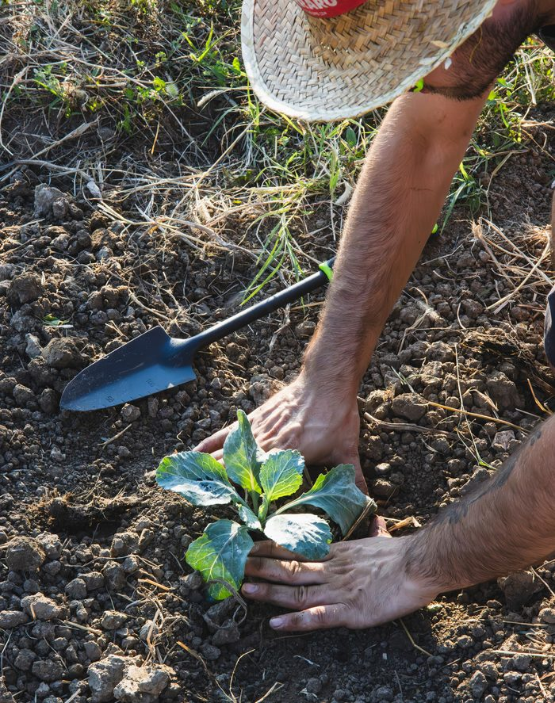
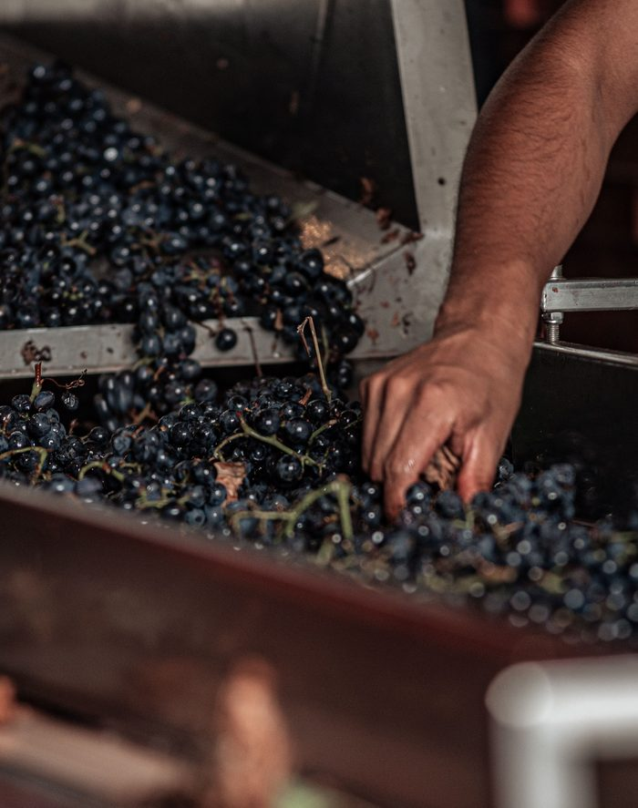
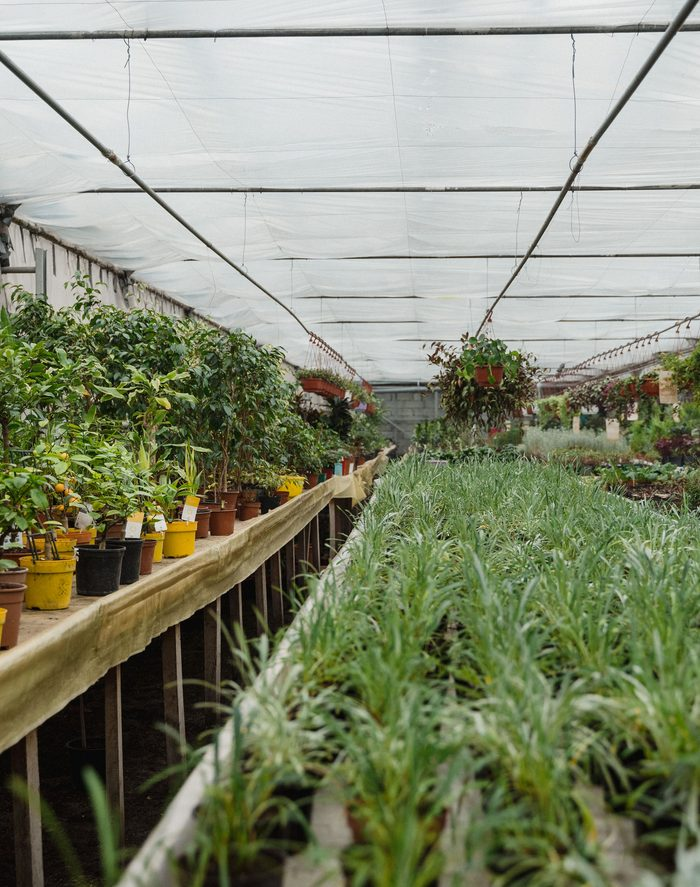

We collect and annotate image, video, and sensor data from crops, livestock, and agricultural machinery across Latin America.
Click any card to see what each task captures. Photos shown are placeholders, so swap in real footage anytime.
Hover to pause · Click a card to flip it
Here's exactly what happens once you reach out.
Modality, crop, vertical, labeling criteria.
Contributors in the right regions, ready in days.
Capture with live quality control, visible to you.
Your spec applied, structured for training.
A validated dataset, on your timeline.
No single country in Latin America grows everything. That's the point. Click a country to see what it's known for.
Video alone can't teach a robot how the real world feels. Every session we record captures multiple synchronized signals at once, so a model learns to connect what it sees with what it would feel, hear, and sense: real world data that actually behaves like the real world.
First person footage recorded from a head mounted camera, showing exactly what the worker's hands do and see during each task.
Spatial and distance information captured alongside video, so a model can understand how far an object is and how a hand moves through 3D space.
Grip pressure and contact force recorded through sensorized gloves, capturing what a human hand feels when it picks, squeezes, or twists something.
Inertial sensors (IMU) that track how the hand, wrist, and arm move through a task, frame by frame.
Ambient and task generated sound, from a knife cutting a stem to a tractor idling nearby: a signal a model can learn to associate with an action.
Every dataset can ship with the labeling layer your pipeline expects: object boxes, hand pose, or scene structure. The frames below are illustrative samples over our own footage, not a live client deliverable.



Sample annotations shown for illustration. Actual labeling schema is defined per project spec.
Agricultural robotics is moving past GPS-guided machines that simply follow rows. The next generation needs to manipulate: identify a single ripe fruit, judge its firmness, and execute the precise motion to pick it without damage. That kind of dexterity can't be trained on route data. It has to be trained on what the task actually looks like from the point of contact.
Most public agricultural datasets are shot from drones or fixed cameras, built for remote-sensing work like yield mapping or NDVI analysis. None of them show what a harvesting arm or weeding end-effector actually sees: leaves partially blocking the target, light shifting row to row, a hand adjusting grip mid-motion.
AgroData.ai's contributors record real harvesting, pruning, grafting, and inspection, across crop types and growing seasons, with the same visual noise a robot will face in the field: occlusion, soft-body deformation, inconsistent light, dozens of hand postures for dozens of crop geometries.
In-domain egocentric data consistently outperforms third-person or synthetic training data on agricultural manipulation benchmarks.
AgroData.ai was born out of Vintti, a staffing company founded in 2022 that has spent years connecting Latin American talent with companies across the US and Canada. Along the way, we got good at one specific thing: finding real people, in real places, and connecting them to work that matters somewhere else entirely.
We're applying that same expertise to a new problem. Instead of only connecting people, we're now connecting people and agricultural spaces, the farms, greenhouses, and fields across Latin America, with the AI labs that need real world data to train the next generation of physical AI.
We're not a faceless data vendor. We're a small team from this region, genuinely passionate about data, who believes this work matters beyond any one contract.
The world's population is projected to reach 9.7 billion by 2050, and global food production will need to grow by an estimated 70% to keep up.
Every hour of data we collect is a small contribution toward the systems that will help meet that demand. That's the part we want to play.
Everything we usually get asked before a first call.
Our data comes from partnerships with farms, fincas, greenhouses, and nurseries across Latin America. Workers and growers on these operations record the tasks as part of their normal day, so the footage reflects real conditions. Every contributor signs a consent and likeness release before recording.
Yes. Datasets are delivered under a commercial license that transfers full usage rights, including for model training and redistribution within your product. Exclusivity is available on request.
Anything from row crops to orchards and greenhouse work: harvesting, pruning, grafting, weeding, and inspection. If it's not in our current library, we scope a custom shoot.
Egocentric video by default. Hand pose, depth, synchronized multi-camera, and force sensing are available on top, depending on the task.
Yes. We start most engagements with a small pilot, usually 20 to 50 hours of a single task, so you can validate quality before scaling.
Every clip can ship with hand pose tracking, object bounding boxes, and action-level captions, tailored to what your training pipeline needs.
Pilots typically ship in 2 to 3 weeks. Larger volumes depend on season and crop availability, we'll give you a real timeline on the call.
Across Argentina, Brazil, and other Latin American growing regions, which gives access to crop varieties and harvest windows not well represented in existing datasets.
Pick a time that works for you. Come with a spec, or just an idea, we'll help you define the modality, crop, vertical and labeling criteria.